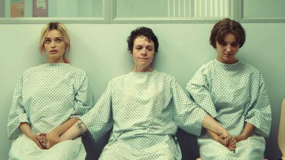
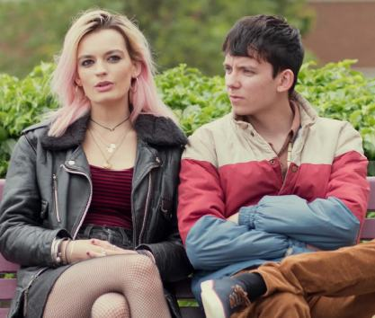
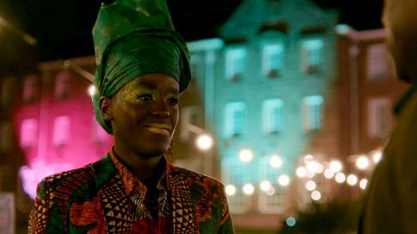

A typical high school setting, everyone has had sex during the summer. Feels like Deja vu. Smells like teen spirit. I’ve seen this before: in movies like ‘10 Things I Hate About You’, ‘Clueless’, ‘Mean Girls’, ‘High School Musical’, I’ve spent my less than mature days reading such fiction on Wattpad. I see familiar scenes in the first 20 minutes of the show: The gay, black best friend, the troupe of three that are equivalent to “the plastics” or the “untouchables”, the dumb blonde, the emo chick, the hot jock, the bully and most importantly, the lanky/nerdy/uncool protagonist. Welcome to Sex Education, the show that is about sex, without it being about sex. The show revolves around Otis Milburn, otherwise awkward and nervous, who’s precocious nature and uncanny ability to give out sex advice (even though he’s never had it before) along with Maeve Wiley, the rebellious emo-girl-who-hates-everybody, taking care of logistics, run a sex clinic in Moordale High.
What sets Sex Education apart from these old school teen romcoms is simple: the time it gives itself to get involved in its own world. While ‘Mean Girls’ had to wrap the story up and tie a neat little bow on it within 90 minutes, the series format makes room for all of Sex Education’s many characters to breathe. The one-dimensional villains of yesterday can now have actual real personalities, and secondary characters can have lives outside of their interactions with the protagonists. And the creators make sure to not squander this opportunity: effectively all of the characters on the show feel real, coming to life with their own distinct sets of flaws and redeeming qualities. An example of the way Sex Education uses the liberty of extra time reveals itself during the episode where Maeve gets an abortion. The anti-abortionists outside the clinic could so easily have just been that, flat one-dimensional sketches of people. But instead, the writers chose to color them in. The conversation Otis has with the woman outside the clinic in the grocery store adds so much to this character whose perspective we now actually get the time and space to consider rather than just discard it and her.


The importance of layered characterization in storytelling cannot be overstated. If you do not have relatable or redeemable characters, you can never really generate true emotion because then we, the audience, always know who’s in the right and who’s in the wrong. Sex Education however is quick to understand that an outright villain is not necessary for a conflict. Take Otis and Eric’s fight in Season 1, when Otis left Eric on his birthday to help Maeve find the culprit who leaked Ruby’s photos. Otis’ fault? No, he was just trying to help someone who was going to be very publicly embarrassed the next day. Eric’s fault? Of course not, he’s justified in being angry when his best friend abandons him alone and outside on his birthday while he’s dressed in full drag. By not handing us easy answers, Sex Education makes us feel the stress and frustration of the argument: we see and understand both perspectives, and that makes it all the more harder to get a simple moral solution that could resolve the issue. What most of us don’t realise, however, is that this complexity is what actually makes characters compelling. Without any layers to unfold, we can’t really accept anyone as a person, as everyone real has around a million contradictory thoughts that at any particular time are struggling to rear their head.


Something to notice about the setting of Sex Education is that this show is set in a hybrid universe: A very British speak and setting with all the elements of an American high school. The show takes the experiences of a teenager and divorces it from the American bog-downs. Nuances, like most people riding bikes and not cars; nuances, wearing less than perfect clothes – Otis wearing practically the same striped T-shirt every day, nuances, like forests and hills instead of suburbs and malls, a refreshing break from the usual.
Another element that sets Sex Education apart is in the use of, well, sex. In almost all other romantic or dramatic shows, sex is used as the climax (pun unintended) to a building tension: the guy finally getting the girl, the husband cheating on his wife, the protagonists finally admitting their feelings for each other. From the very first shot, Sex Education tells it’s viewers that this is not the approach it’s going to take. Sex is shown almost casually, just another part of life rather than something to be made a huge deal out of. And this subtlety turns out to be incredibly important: the normalisation of sex is one of the principal messages that the show wants to get out there. Especially in a country like India, where sex is treated as either something wrong or something unholy, reducing it to just another thing people do really opens us up to a new perspective not many of us had seen before. It’s also a bold statement by the showrunners: we’re not going to depend on sex titilating our audience to engage them, but we’ll sure as hell show a lot of it.
Similar subtleties can be noted in Sex Education’s messaging: always strong, but never heavy-handed. Eric, an openly gay teen, is assaulted on the street for cross-dressing. Now there’s two ways to handle this as a plot point: first, make Eric someone who constantly talks about the struggle throughout and prove his point when this happens. This is the safe way. Second, let Eric go about his business and then hope that when this happens his characterisation and the moment is strong enough to deliver the message. This is the riskier route. Guess which way the creators went? I’ll give you a clue: they had the stones to name their show Sex Education. Again, they expressed enough faith in their storytelling and character building to let the messages speak for themselves visually rather than shove them down people’s throat. Well, at least for the most part.


At times, Sex Education doesn’t fully flesh out its conflicts and resolutions, something which admittedly goes unnoticed among all of the parallel storylines. When Eric was assaulted for dressing in full drag, he wouldn’t even hold his mother’s hands while saying grace at the breakfast table, he didn’t dress like himself and needless to say, he was angry and frustrated. But, in what felt like a weak resolution to his trauma, him seeing another black, cross dressed man in a car leads to him waking up feeling quite alright the next day, almost as if all his sadness was absolved just because he felt validated by seeing someone like him. Nevertheless, the show is hilarious, endlessly and effortlessly hilarious, with situations that go to shit and the deadpan deliveries that make you bark with laughter, and yet at the same time it manages to be incredibly heartfelt and emotional when it wants to be. No one is always sad, and neither is anyone always happy. No one is perfect, and neither is anyone irredeemable. That’s what being human is, and that defines the characters the show gives us. So just like we accept and cherish the people around us, we accept and cherish Sex Education, despite any and all of its flaws.